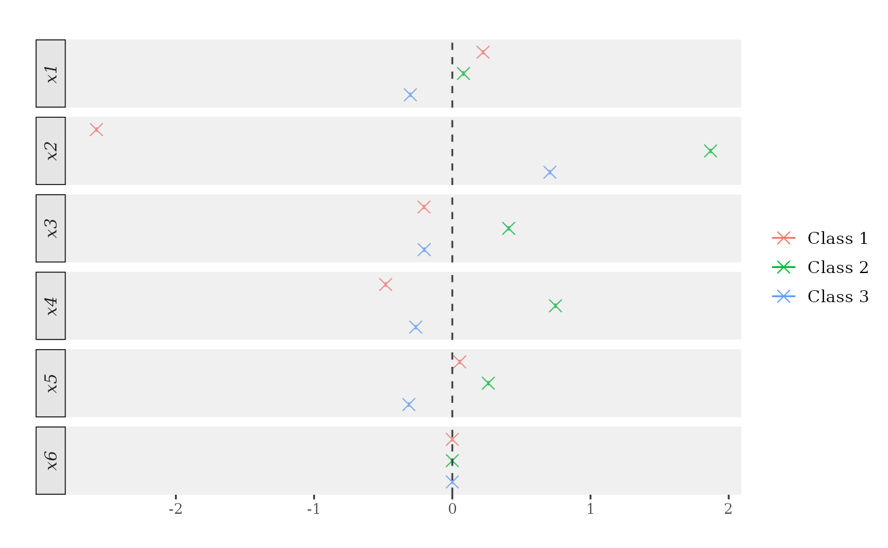
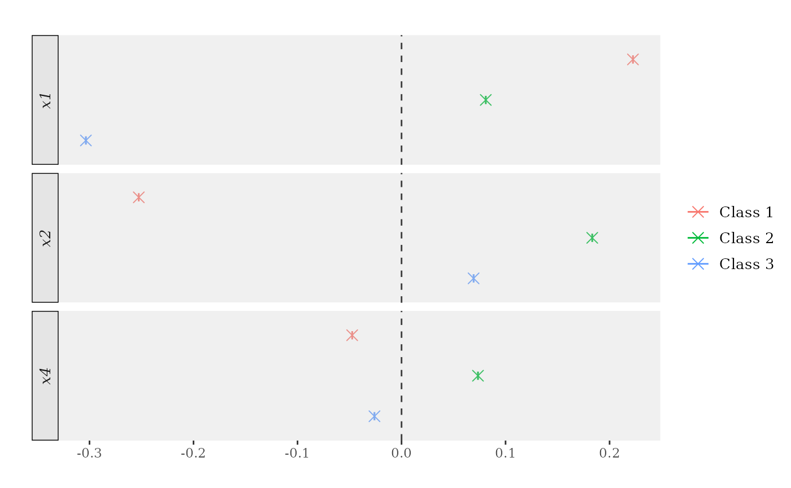
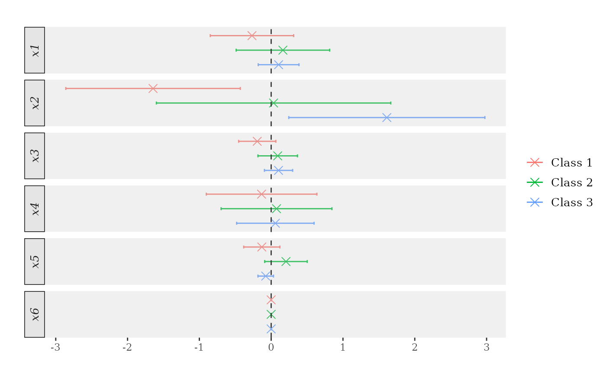

In this tutorial, we show how to use the ocf package to
estimate and make inference about the conditional choice probabilities
and the covariates’ marginal effects.
Before diving in the coding, we provide an overview of the statistical problem at hand.
We postulate the existence of a latent and continuous outcome variable , assumed to obey the following regression model:
where consists of a set of raw covariates, is a potentially non-linear regression function, and is independent of .
An observational rule links the observed outcome to the latent outcome using unknown threshold parameters that define intervals on the support of , with each interval corresponding to one of the categories or classes of :
The statistical targets of interest are the conditional choice probabilities:
and the marginal effect of the -th covariate on :
where is the -th element of the vector and and correspond to with its -th element rounded up and down to the closest integer.
For illustration purposes, we generate a synthetic data set. Details
about the employed DGP can be retrieved by running
help(generate_ordered_data).
## Generate synthetic data.
set.seed(1986)
n <- 100
data <- generate_ordered_data(n)
sample <- data$sample
Y <- sample$Y
X <- sample[, -1]
table(Y)
Y
1 2 3
31 37 32
head(X)
x1 x2 x3 x4 x5 x6
1 -0.04625141 1 -1.7879732 0 -1.0515868012 1
2 0.28000082 0 -1.1553030 0 -0.4285613418 0
3 0.25317063 1 1.6677330 0 0.1621459072 0
4 -0.96411077 0 -0.1587051 0 0.3587438820 0
5 0.49222664 0 -1.4020533 1 0.0004035277 0
6 -0.69874551 1 -0.4450061 0 -0.3183447897 0To estimate the conditional probabilities, the ocf
function constructs a collection of forests, one for each category of
Y (three in this case). We can then use the forests to
predict out-of-sample using the predict method.
predict returns a matrix with the predicted probabilities
and a vector of predicted class labels (each observation is labelled to
the highest-probability class).
## Training-test split.
train_idx <- sample(seq_len(length(Y)), floor(length(Y) * 0.5))
Y_tr <- Y[train_idx]
X_tr <- X[train_idx, ]
Y_test <- Y[-train_idx]
X_test <- X[-train_idx, ]
## Fit ocf on training sample. Use default settings.
forests <- ocf(Y_tr, X_tr)
## Summary of data and tuning parameters.
summary(forests)
Call:
ocf(Y_tr, X_tr)
Data info:
Full sample size: 50
N. covariates: 6
Classes: 1 2 3
Relative variable importance:
x1 x2 x3 x4 x5 x6
0.369 0.075 0.253 0.101 0.172 0.030
Tuning parameters:
N. trees: 2000
mtry: 3
min.node.size 5
Subsampling scheme: No replacement
Honesty: FALSE
Honest fraction: 0
## Out-of-sample predictions.
predictions <- predict(forests, X_test)
head(predictions$probabilities)
P(Y=1) P(Y=2) P(Y=3)
[1,] 0.3543743 0.5375517 0.10807401
[2,] 0.4571570 0.4057421 0.13710091
[3,] 0.1173914 0.4803692 0.40223943
[4,] 0.6342519 0.3132168 0.05253126
[5,] 0.3482501 0.3873043 0.26444560
[6,] 0.6284292 0.2999011 0.07166965
table(Y_test, predictions$classification)
Y_test 1 2 3
1 12 3 1
2 6 6 7
3 3 2 10To produce consistent and asymptotically normal predictions, we need
to set the honesty argument to TRUE. This makes the
ocf function using different parts of the training sample
to construct the forests and compute the predictions.
## Honest forests.
honest_forests <- ocf(Y_tr, X_tr, honesty = TRUE)
honest_predictions <- predict(honest_forests, X_test)
head(honest_predictions$probabilities)
P(Y=1) P(Y=2) P(Y=3)
[1,] 0.3476025 0.3216374 0.3307601
[2,] 0.3865934 0.3244973 0.2889093
[3,] 0.2351550 0.4112832 0.3535617
[4,] 0.4237396 0.3527212 0.2235392
[5,] 0.3394056 0.3034435 0.3571509
[6,] 0.4069484 0.3231956 0.2698560To estimate standard errors for the predicted probabilities, we need
to set the inference argument to TRUE. However, this works
only if honesty is TRUE, as the formula for the variance is
valid only for honest predictions. Notice that the estimation of the
standard errors can considerably slow down the routine. However, we can
increase the number of threads used to construct the forests by using
the n.threads argument.
## Compute standard errors. Do not run.
# honest_forests <- ocf(Y_tr, X_tr, honesty = TRUE, inference = TRUE, n.threads = 0) # Use all CPUs.
# head(honest_forests$predictions$standard.errors)To estimate the covariates’ marginal effects, we post-process the
conditional probability predictions. This is performed by the
marginal_effects function that can estimate mean marginal
effects, marginal effects at the mean, and marginal effects at the
median, according to the eval argument.
## Marginal effects at the mean.
me_atmean <- marginal_effects(forests, eval = "atmean") # Try also 'eval = "atmean"' and 'eval = "mean"'.
print(me_atmean) # Try also 'latex = TRUE'.
ocf marginal effects results
Data info:
Number of classes: 3
Sample size: 50
Tuning parameters:
Evaluation: atmean
Bandwidth: 0.1
Number of trees: 2000
Honest forests: FALSE
Honesty fraction: 0
Marginal Effects:
P'(Y=1) P'(Y=2) P'(Y=3)
x1 -0.119 -0.283 0.402
x2 -0.986 0.724 0.262
x3 -0.058 -0.027 0.085
x4 -0.507 -1.498 2.006
x5 0.028 0.048 -0.075
x6 0.000 0.000 0.000
plot(me_atmean)
Sometimes, we are only interested in the marginal effects of a subset
of the available covariates. To spare some time, we can use the
these_covariates argument to estimate marginal effects of
only those covariates. This argument also allows the user to declare
whether the covariates are to be treated as "continuous" of
"discrete" (marginal effect estimation is handled
differently according to the covariate’s nature).
these_covariates must be a named list, with entries’ names
specifying the target covariates and entries specifying the covariates’
types. If not used, covariates’ types are inferred by the routine using
basic heuristics (as in the example above).
## Marginal effects at the mean.
target_covariates <- list("x1" = "continuous", "x2" = "discrete", "x4" = "discrete")
me_atmean <- marginal_effects(forests, eval = "atmean", these_covariates = target_covariates)
plot(me_atmean)
As before, we can set the inference argument to TRUE to
estimate the standard errors. Again, this requires the use of honest
forests and can considerably slow down the routine.
## Compute standard errors.
honest_me_atmean <- marginal_effects(honest_forests, eval = "atmean", inference = TRUE)
print(honest_me_atmean) # Try also 'latex = TRUE'.
ocf marginal effects results
Data info:
Number of classes: 3
Sample size: 50
Tuning parameters:
Evaluation: atmean
Bandwidth: 0.1
Number of trees: 2000
Honest forests: TRUE
Honesty fraction: 0.5
Marginal Effects:
P'(Y=1) P'(Y=2) P'(Y=3)
x1 -0.018 -0.009 0.027
x2 -0.368 0.115 0.254
x3 -0.015 0.006 0.009
x4 -0.132 -0.490 0.622
x5 -0.003 0.030 -0.027
x6 0.000 0.000 0.000
plot(me_atmean)